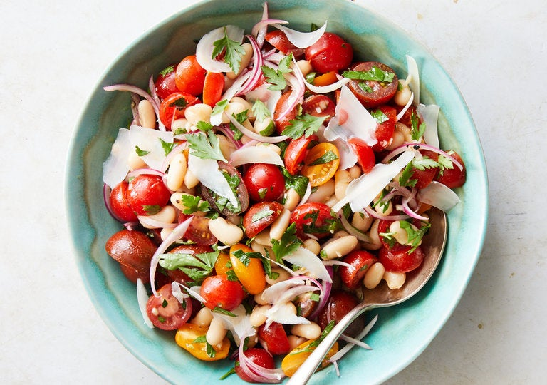

Tomato White Bean Salad

This simple salad makes a bright, tangy companion to grilled meat or fish. Marinating the red onions and garlic in the vinaigrette for 15 minutes not only diffuses their flavor but also softens their bite. This salad travels well and would be an excellent choice for a potluck or picnic. It’s also supremely versatile, and can be dressed up with any soft herb like basil, tarragon or mint, and chile, in almost any form.
Ingredients
- ¼cup olive oil
- 3tablespoons red wine vinegar
- ¾teaspoon kosher salt (such as Diamond Crystal)
- ½teaspoon Dijon mustard
- ½teaspoon black pepper
- ¾cup very thinly sliced red onion (about ½ a small onion)
- 1½teaspoons minced garlic (about 1 large clove)
- 2pints cherry tomatoes, halved
- 1(15-ounce) can cannellini beans, rinsed and drained
- 1 tbsp thyme leaves
- ⅓cup chopped fresh parsley
- ½cup shaved Parmesan (about 2 ounces)
Steps
- In a small bowl, whisk together the olive oil, vinegar, salt, mustard and pepper. Stir in the red onion and garlic and set the dressing aside to marinate for 15 to 30 minutes at room temperature.
- Place the tomatoes, white beans and parsley in a large bowl. Pour the dressing over the salad, toss well, then gently fold in the Parmesan. Serve at room temperature using a slotted spoon.